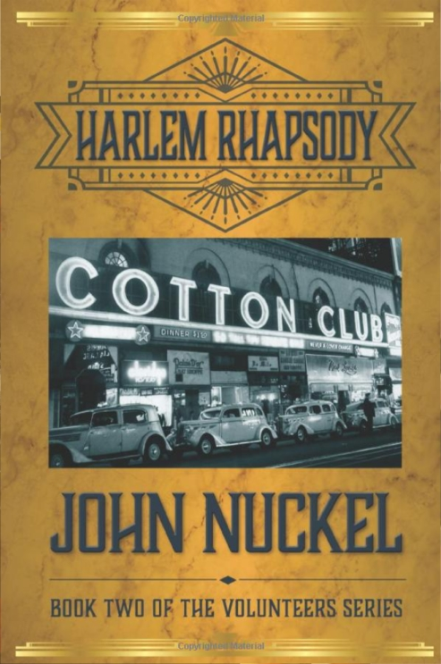

Robbie Tucker Writes and Edits
Robbie Tucker pitched in on a weekend when we needed immediate copy editing for a
Look Book describing my documentary film. Thanks to her, our grammar was improved,
our sentences were leaner, and italics and commas were in the right places.
Thank you to Robbie Tucker, my editor. I appreciate your thoughtful edits that took my story
to a whole new level. You were very patient with me, and I will always be grateful.
When Robbie Tucker did an editorial pass on my play “110 Stories” before its 2010
reading at Geffen Playhouse, it was both thorough and insightful. Her work brings
a sensitivity to your content, and a sharp eye for form, as well as an ear for the
music of language. More so, she is a great partner; listening to your needs and
delivering what you requested.

I am still under the spell of Robbie Tucker's critique, both the written and the
personal. She has a gift. Her intelligence, sensitivity, and clarity are a rare
combination. I am grateful for her incisive, constructive feedback. Her ability
with language is remarkable.
Robbie Tucker is fun to work with and she had many creative solutions. She noticed things others before had not picked up on.
I highly recommend Robbie; she will improve your work.

It was such a thrill to work with the talented Robbie Tucker. I can't imagine a better collaborator.
Robbie Tucker has a keen editorial mind, complemented by a delicate touch that is ever mindful of an author's vision.
Her work ethic is beyond comparison, so it's a bonus that talking with her is a pleasure.